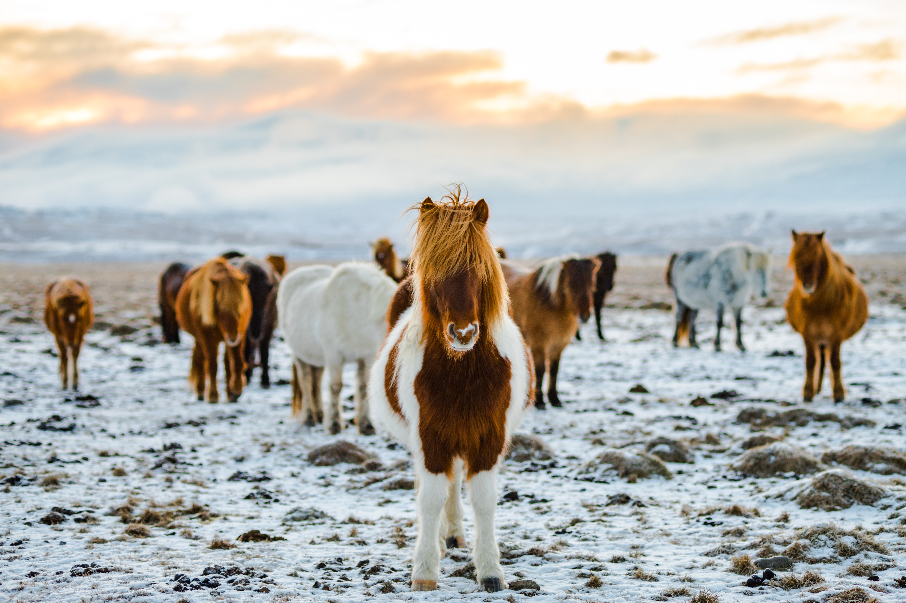

Iceland

The Northern Lights, also called Aurora Borealis, and Norðurljós in Icelandic, are one of the most spectacular shows on this earth and can frequently be seen in Iceland from September through March on clear and crisp nights. The Northern Lights occur high above the surface of the earth where the atmosphere has become extremely thin, at an altitude of 100-250 km. They are created by electrically charged particles that make the thin air shine, not unlike a fluorescent light. Auroras can be seen in auroral belts that form 20-25 degrees around the geomagnetic poles, both the north and the south.

There are towns and villages where the sound of water tumbling down the mountains is an ever-present signature tune. The people of Seyðisfjörður fall asleep and awaken to the cacophony of multiple cascades, some gently falling, others tumbling and babbling energetically down from the high mountains which surround the town. Each spring and summer meltwater from the mountains increases the speed and volume of these falls markedly. Some are wonderfully and descriptively named such as Gufufoss (Steam Falls). The spray generated really does give the appearance of steam.

The Icelandic horse is a small breed of horse that has evolved in isolation in Iceland. Archeological finds in Norway, where the Icelandic horse is descended from, have revealed that the Icelandic horse belongs to an ancient race that died out in other parts in Europe but survived in Iceland for 1100 years without crossbreeding. It has gradually developed into several strains. The most important of these are the Svaðastaðir strain and the Hornafjörður strain. Horses from Svaðastaðir are considered to have a more attractive gait and to be more dainty and frisky; while those from Hornafjörður are larger, and have greater endurance and courage.
Foods of Iceland
Iceland is surrounded by ocean, so it shouldn’t come as a surprise that fish and seafood is a big part of the Icelandic cuisine. Most of the traditional Icelandic food revolves around fish, dairy, bread, potatoes, and lamb.The roots of Iceland’s cuisine comes from the Scandinavian cuisine after Norse Vikings settled here during the 9th century and onwards.Today, food from all over the world is widely available at the restaurants in Reykjavik and other cities. A lot of the restaurants specialize in seafood with an emphasis on quality of products, rather than the traditional ways of cooking.